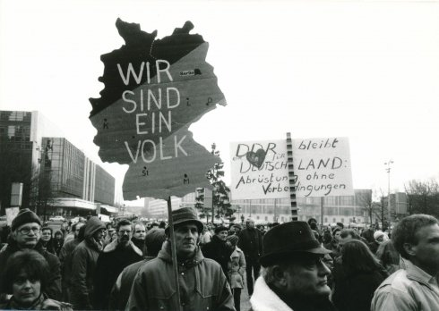
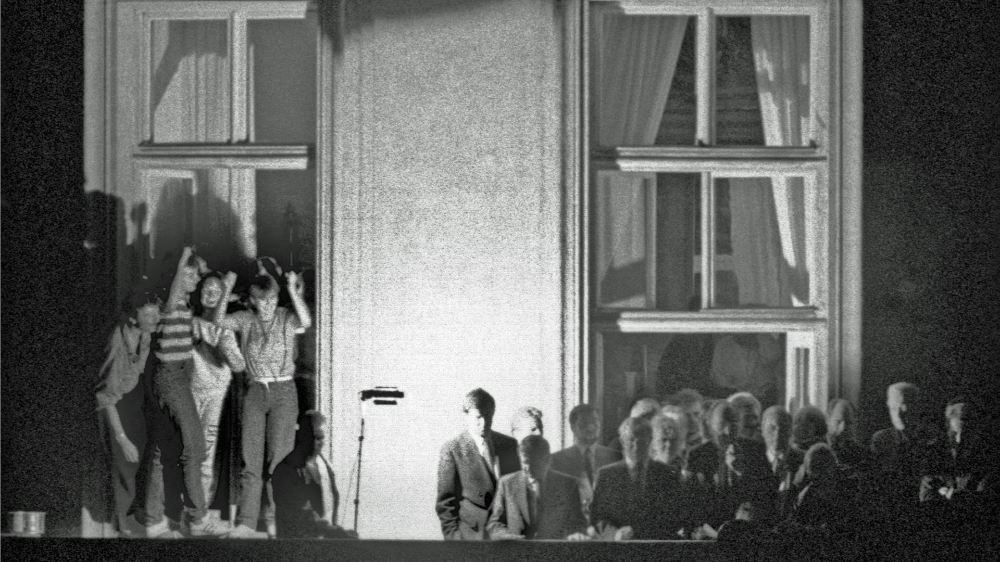
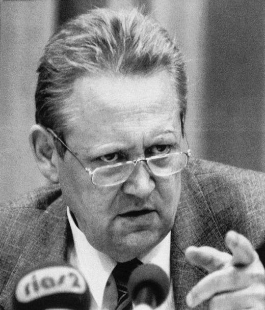
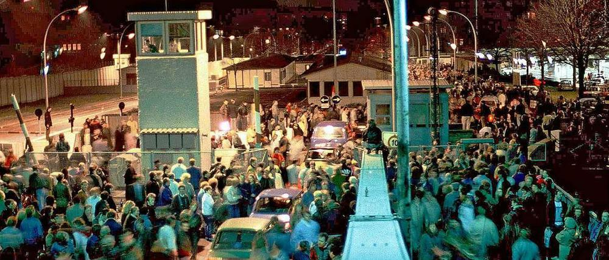
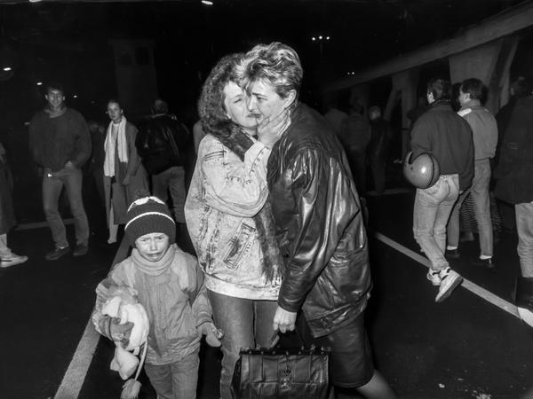

Nach dem Zweiten Weltkrieg war Deutschland geteilt: Im Westen entstand die BRD, im Osten die DDR. 1961 wurde die Berliner Mauer gebaut, seitdem gab es kaum noch Reisefreiheit.
In der DDR herrschte die SED-Diktatur. Es gab keine Meinungs- und Pressefreiheit, und die Stasi sorgte für Überwachung. Dazu kamen wirtschaftliche Probleme: Die Versorgung der Menschen war gering, die Verschuldung des Landes hoch.
1985 kam Gorbatschow in der UdSSR an die Macht und setzte auf Glasnost und Perestroika, also auf Offenheit und Umbau. Dadurch hatte die DDR weniger Rückhalt.
2
1989: Fluchtbewegung und Proteste

„Wir sind ein Volk!“

DDR-Flüchtlinge in der Prager Botschaft
1989 öffnete Ungarn seine Grenze zu Österreich immer weiter. Viele DDR-Bürger nutzten das und flohen über Ungarn und Österreich in die BRD. Andere suchten Zuflucht in westdeutschen Botschaften, besonders in Prag.
Auch im Land selbst wuchs der Protest: In Leipzig gab es Montagsdemonstrationen, bei denen die Menschen riefen: „Wir sind das Volk!“ Immer mehr von ihnen forderten Reisefreiheit und demokratische Reformen.
Am 18. Oktober 1989 trat Erich Honecker zurück. Sein Nachfolger wurde Egon Krenz.
3
Der 9. November 1989: Schabowski und die Pressekonferenz

Günter SchabowskiDie Schlagzeile am nächsten Tag
Am 9. November 1989 beschloss die DDR-Führung eine neue Reiseregelung, die eigentlich erst später und kontrolliert gelten sollte. Günter Schabowski informierte auf einer Pressekonferenz über diese Regelung.
Auf die Nachfrage, ab wann sie gelte, antwortete er:
„Das tritt nach meiner Kenntnis … sofort, unverzüglich in Kraft.“
Die Medien verbreiteten die Nachricht sehr schnell, und viele DDR-Bürger machten sich auf den Weg zu den Grenzübergängen.
4
Die Nacht des Mauerfalls

Andrang an der Bornholmer StraßeFeiern auf der Mauer
Immer mehr Menschen versammelten sich an den Grenzübergängen, doch die Grenzsoldaten hatten keine klaren Befehle. Besonders groß war der Andrang am Übergang Bornholmer Straße. Dort stand der verantwortliche Offizier Harald Jäger unter starkem Druck.
Gegen 23:30 Uhr ließ er die Menschen passieren. Danach öffneten auch weitere Grenzübergänge, und tausende DDR-Bürger strömten nach West-Berlin. Viele feierten auf und an der Berliner Mauer.
5
Folgen und Bedeutung
Das Brandenburger Tor

Freude und Erleichterung
Der Mauerfall bedeutete das faktische Ende der deutschen Teilung und schwächte die DDR weiter. Im März 1990 gab es freie Wahlen in der DDR, und in den Zwei-plus-Vier-Verhandlungen ging es um die Einheit.
Am 3. Oktober 1990 folgte die deutsche Wiedervereinigung, damit endete auch die SED-Diktatur.
Der Mauerfall war zugleich ein wichtiges Ereignis für das Ende des Kalten Krieges. Er gilt als Symbol für Freiheit, Demokratie und die Kraft der Bevölkerung.